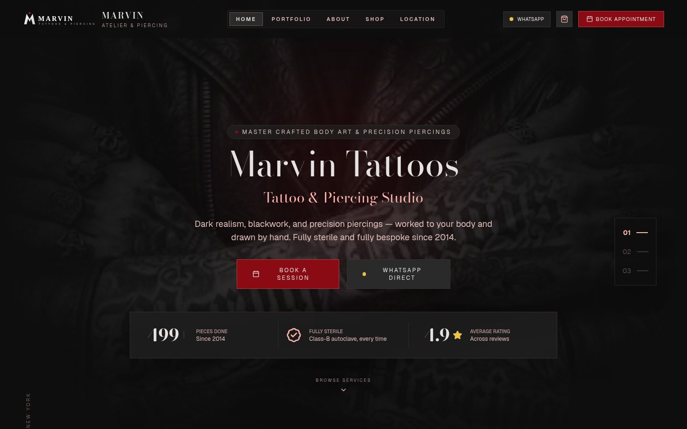

CLIENT WORK • BODY ARTISTRY • FULL-STACK WEB
Marvin Tattoos & Piercing Atelier
A bespoke brand web application, high-resolution body art showcase, and automated consultation scheduling platform engineered for Kampala's premier tattoo and piercing atelier.

1. The Context: Master Craftsmanship in Kampala
Marvin Tattoos & Piercing Atelier, located at New Pioneer Mall in Kampala, Uganda, is headed by Master Marvin—an artist with over 14 years of specialized craft across dark realism, bespoke blackwork, semi-permanent makeup (PMU), and hospital-grade body piercings.
Despite exceptional physical artistry and a 4.9-star reputation, the studio previously conducted customer intake through chaotic manual WhatsApp chats and Instagram direct messages. The client needed a centralized, prestigious digital portal reflecting the atelier's dark gothic luxury aesthetic while establishing a structured appointment intake pipeline.
2. Architecture & Engineering Decisions
The solution was architected as a lightweight, fast-loading Single Page Application (SPA) built on React 18 and bundled with Vite, styled using a custom tailored design system in Tailwind CSS, with a companion Express/Node.js backend.
Key Architectural Pillars:
- Dark Luxury Aesthetic System: Crafted an editorial typography hierarchy utilizing Limelight, Bodoni Moda, and Geist on a titanium slate and crimson palette, reinforcing a premium gothic luxury atmosphere.
- High-Resolution Curated Galleries: Image-heavy portfolio components with responsive WebP picture sources and progressive loading, categorized across dark realism, fine-line lettering, tribal blackwork, and precision titanium piercings.
- Structured Consultation Funnel: Guided booking workflow that captures client preferences, body placements, reference ideas, and preferred dates, converting them into structured, pre-formatted WhatsApp consultations for instantaneous studio response.
- Hygiene & Safety Compliance Badging: Dedicated trust modules documenting the studio's Class-B autoclave sterilization protocols, ASTM F-136 titanium jewelry standards, and aftercare guidance.
3. Technical Challenges & Solutions
Challenge A: Maintaining Lightning-Fast Performance on Media-Heavy Portfolios
High-resolution tattoo imagery often degrades mobile page load performance, particularly on regional cellular networks across East Africa.
Solution:
Implemented modern image compression pipelines utilizing next-gen WebP assets with explicit aspect ratios, asynchronous decoding, and lazy loading. This reduced the initial payload to under 1.2 MB while retaining razor-sharp tattoo ink detail on retina screens.
Challenge B: Frictionless Booking Without Barrier to Entry
Requiring account creation or complex multi-step forms causes steep drop-offs in appointment booking rates.
Solution:
Engineered an interactive service pricing and consultation modal that generates one-click encrypted WhatsApp links with pre-populated inquiry metadata, allowing prospective clients to confirm dates and share reference images with zero onboarding friction.
4. Key Deliverables & Business Results
- Live Production Deployment: Operating smoothly at marvintattoos256.com.
- Automated Consultation Inflow: Eliminated ambiguous repetitive inquiries by capturing service type, size, and body location upfront.
- Elevated Brand Perception: A digital storefront that mirrors the craftsmanship, sterile precision, and artistry of the studio.